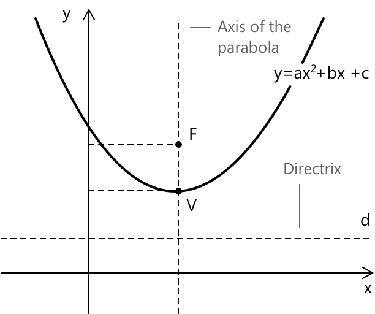

Квадратні рівняння з параметрами
Означення
Квадратні рівняння зазвичай вводяться в їхній класичній формі, де всі коефіцієнти є фіксованими дійсними числами. Стандартний вираз слугує базовою моделлю для кожного рівняння другого степеня: \[ a x^{2} + b x + c = 0 \]
Ключові ідеї квадратних рівнянь тісно пов'язані з геометрією параболи та поведінкою дискримінанта. Ці елементи визначають, як вигинається графік, де лежить його вершина і чи має рівняння два дійсні розв'язання, один повторений корінь або пару комплексних коренів.

Однак у багатьох ситуаціях коефіцієнти не є сталими, а залежать від зовнішньої величини, яку ми розглядаємо як параметр. Замість того, щоб бути фіксованими, числа \( a \), \( b \) та \( c \) стають функціями дійсного параметра \( k \). Таким чином, параметричне квадратне рівняння можна записати в більш загальній формі:
\[ a(k)\,x^{2} + b(k)\,x + c(k) = 0 \] \[ a(k) \ne 0 \]
Умова \( a(k) \ne 0\) запобігає перетворенню рівняння на лінійне рівняння з параметрами при зміні параметра, гарантуючи, що воно зберігає структуру квадратного рівняння для всіх допустимих значень \( k \).
Ця сторінка присвячена квадратному випадку. Для ширшого обговорення параметричних рівнянь різних степенів див. рівняння з параметрами.
Роль дискримінанта
Дискримінант дозволяє зрозуміти, як поводяться розв'язання квадратного рівняння. Коли коефіцієнти залежать від параметра, ця ідея залишається незмінною, але сам дискримінант стає функцією цього параметра. Виходячи з коефіцієнтів \( a(k) \), \( b(k) \) та \( c(k) \), ми отримаємо:
\[ \Delta(k) = b(k)^{2} – 4\,a(k)\,c(k) \]
Записаний в такій формі, дискримінант дає уявлення про те, що відбувається з коренями для кожного значення \( k \). Його знак повідомляє нам усе необхідне:
- Коли \( \Delta(k) > 0 \), рівняння має два різні дійсні розв'язання.
- Коли \( \Delta(k) = 0 \), рівняння має одне дійсне розв'язання, яке є подвійним коренем.
- Коли \( \Delta(k) < 0 \), рівняння має два комплексно-спряжених розв'язання.
Приклад 1
Почнемо з дуже простого випадку та розглянемо квадратне рівняння: \[ x^{2} + kx + 1 = 0 \]
Цей приклад є корисним, оскільки кожен коефіцієнт залежить від параметра \( k \) простим чином:
\[ a(k) = 1 \qquad b(k) = k \qquad c(k) = 1 \]
Перед аналізом коренів корисно згадати, як визначається дискримінант у загальному випадку. Для квадратного рівняння в стандартній формі дискримінант дорівнює:
\[ \Delta = b^{2} – 4ac \]
і його знак визначає характер розв'язань. Тепер дослідимо, як змінюється дискримінант, коли коефіцієнти залежать від параметра \(k\). Підставивши \( a(k) \), \( b(k) \) та \( c(k) \) у ту саму формулу, ми отримаємо:
\[ \Delta(k) = b(k)^{2} - 4\,a(k)\,c(k) \]
Вираз спрощується до:
\[ \Delta(k) = k^{2} – 4 \]
Щоб зрозуміти, коли існують дійсні розв'язання, ми дослідимо квадратну нерівність:
\[ k^{2} – 4 \ge 0 \]
Її розв'язання дає два окремі проміжки:
\[ k \le -2 \quad\text{або}\quad k \ge 2 \]
Для цих значень параметра дискримінант є додатним, і квадратне рівняння має два різні дійсні корені. У граничних точках \( k = \pm 2 \) дискримінант стає рівним нулю, і рівняння має один повторений розв'язок. Коли:
\[ -2 < k < 2 \]
дискримінант є від'ємним, і рівняння більше не має дійсних коренів. Замість цього воно дає пару комплексних спряжених розв'язань. Наступна таблиця узагальнює аналіз знаків виразів \(k - 2\), \(k + 2\) та їхнього добутку, підкреслюючи, як змінюється знак на трьох проміжках, визначених критичними точками \(k = -2\) та \(k = 2\).
| \[ -2 \] | \[ 2 \] | ||
|---|---|---|---|
| \( k - 2 > 0 \) | \( \boldsymbol{-} \) | \( \boldsymbol{-} \) | \( \boldsymbol{+} \) |
| \( k + 2 > 0 \) | \( \boldsymbol{-} \) | \( \boldsymbol{+} \) | \( \boldsymbol{+} \) |
| \( (k - 2)(k + 2) > 0 \) | \( \boldsymbol{+} \) | \( \boldsymbol{-} \) | \( \boldsymbol{+} \) |
Коли корені виявляються дійсними, корисно мати для них явний вираз.
Застосувавши формулу коренів квадратного рівняння до цього конкретного сімейства, два дійсних розв'язання можна записати у замкненій формі як
\[ x = \frac{-k \pm \sqrt{k^{2} - 4}}{2} \]
Цей вираз прямо показує, як кожен корінь залежить від параметра \(k\), і дозволяє дослідити, як розв'язання рухаються вздовж дійсної прямої при зміні \(k\).
З аналізу вище випливають такі остаточні результати:
- Якщо \( k < -2 \) або \( k > 2 \), рівняння має два дійсні та різні розв'язання.
- Якщо \( k = \pm 2 \), існує один дійсний подвійний корінь.
- Якщо \( -2 < k < 2 \), рівняння має два комплексних спряжених розв'язання.
Геометрична інтерпретація зміни параметрів
Повертаючись до квадратного рівняння, використаного в прикладі 1, також корисно розглянути, як змінюється графік відповідної параболи при зміні параметра \(k\). Кожному значенню \(k\) ми можемо поставити у відповідність параболу:
\[ y = x^{2} + kx + 1 \]
отже, аналіз коренів еквівалентний дослідженню того, де ця крива перетинає вісь x. У міру зміни параметра все сімейство парабол зміщується плавним і передбачуваним чином. Один зі способів описати цю еволюцію — дослідити, що відбувається у трьох ключових режимах параметра.
Коли \(|k|\) стає дуже великим (\(k \to +\infty\) або \(k \to -\infty\)), лінійний член \(kx\) домінує у виразі, і два корені значно віддаляються один від одного. Простий асимптотичний аргумент показує, що один корінь прямує до \(0\), тоді як інший поводиться приблизно як \(-k\). Геометрично це означає, що точки перетину розходяться: одна залишається близько до початку координат, а інша віддаляється все далі вздовж від'ємної осі. Парабола стає все більш нахиленою на вигляд.
При критичних значеннях \(k = \pm 2\) дискримінант стає рівним нулю. Це відповідає моменту, коли парабола торкається осі x рівно в одній точці. У цих випадках графік має єдину точку дотику, рівняння має один повторюваний корінь, а вершина лежить точно на осі.
На проміжку \(-2 < k < 2\) дискримінант від'ємний, тому рівняння не має дійсних розв'язань. З геометричної точки зору це означає, що парабола взагалі не перетинає вісь x. Оскільки старший коефіцієнт є додатним, парабола завжди відкрита вгору, і в цій області параметрів вершина лежить строго вище осі x. Як результат, вся крива залишається по один бік від осі, що відображає той факт, що розв'язання переходять у комплексну площину.
Приклад 2
Тепер розглянемо приклад, дещо складніший за попередній. Розглянемо квадратне рівняння, що залежить від параметра:
\[ (a + 2)x^{2} + (3a - 1)x + (a - 4) = 0 a \neq -2 \]
де умова \(a \neq -2\) гарантує, що коефіцієнт при \(x^{2}\) не перетворюється на нуль, тому вираз залишається справжнім квадратним рівнянням для кожного допустимого значення параметра. Наша мета — визначити, при яких значеннях \(a\) рівняння має два різні дійсні розв'язання. Як зазвичай, це залежить від знака дискримінанта. Щоб уникнути плутанини з параметром \(a\), позначимо коефіцієнти даного квадратного рівняння як \(A\), \(B\), \(C\), так що загальна формула має вигляд:
\[ \Delta = B^{2} – 4AC \]
Підставимо коефіцієнти даного квадратного рівняння і отримаємо:
\[ \Delta(a) = (3a - 1)^{2} - 4(a + 2)(a - 4) \]
Розкриваючи дві частини, наводячи лише основні проміжні кроки, спочатку обчислимо квадрат:
\[ (3a - 1)^{2} = 9a^{2} - 6a + 1 \]
Потім добуток, що містить квадратні та сталі коефіцієнти:
\[ (a + 2)(a - 4) = a^{2} - 2a - 8 \]
Підставивши ці вирази назад у дискримінант і згрупувавши подібні доданки, отримаємо спрощену форму:
\[ \Delta(a) = 5a^{2} + 2a + 33 \]
Це квадратна функція від \(a\) з додатним старшим коефіцієнтом. Щоб зрозуміти, чи може вона бути рівною нулю або бути від'ємною, дослідимо її дискримінант:
\[ 2^{2} – 4 \cdot 5 \cdot 33 = 4 – 660 < 0 \]
Оскільки це значення є від'ємним, парабола, що відповідає виразу (5a^{2} + 2a + 33), ніколи не перетинає горизонтальну вісь: вона залишається строго додатною для всіх дійсних значень \(a\). Отже:
\[ \Delta(a) > 0 \quad \forall a \in \mathbb{R} \]
Рівняння має два дійсні та різні розв'язання для кожного дійсного значення параметра \(a\), за винятком \(a = -2\), яке слід виключити, оскільки воно зробило б коефіцієнт при \(x^{2}\) рівним нулю і перетворило б вираз на рівняння першого степеня.
Приклад 3
Розглянемо квадратне рівняння, що залежить від параметра:
\[ x^{2} - (a - 4)x + (a^{2} - a) = 0 \]
де \(a\) — дійсний параметр. Ми хочемо визначити значення \(a\), при яких добуток двох розв'язань є строго меншим за \(2\). Для загального квадратного рівняння вигляду:
\[ x^{2} + bx + c = 0 \]
добуток розв'язань задовольняє тотожність \(x_{1}x_{2} = c\).
Ця тотожність випливає з розкладеної форми монічного квадратного рівняння, де \(x^{2} + bx + c = (x - x_{1})(x - x_{2})\). Після розкриття добутку сталий член має вигляд \(x_{1}x_{2}\), що пояснює, чому добуток розв'язань дорівнює \(c\).
У цьому випадку сталий член \(c = a^{2} - a\), і вимога, щоб добуток двох розв'язань був меншим за \(2\), перетворюється на нерівність:
\[ a^{2} - a < 2 \]
Переносячи всі доданки вліво, отримаємо нерівність:
\[ a^{2} - a - 2 < 0 \]
Квадратний поліном зліва розкладається як
\[ a^{2} - a - 2 = (a - 2)(a + 1) \]
Критичними точками, отже, є (a = -1) та (a = 2). Щоб визначити, де вираз є від'ємним, проаналізуємо знаки двох множників.
| \[-1\] | \[ 2\] | ||
|---|---|---|---|
| \( a - 2 > 0 \) | \( \boldsymbol{-} \) | \( \boldsymbol{-} \) | \( \boldsymbol{+} \) |
| \( a + 1 > 0 \) | \( \boldsymbol{-} \) | \( \boldsymbol{+} \) | \( \boldsymbol{+} \) |
| \( (a - 2)(a + 1) < 0 \) | \( \boldsymbol{+} \) | \( \boldsymbol{-} \) | \( \boldsymbol{+} \) |
Таблиця знаків показує, що \((a – 2)(a + 1) < 0\), коли параметр лежить між двома коренями:
\[ -1 < a < 2 \]
Добуток розв'язків задовольняє нерівність \(x_{1}x_{2} < 2\) тоді і тільки тоді, коли \(-1 < a < 2.\)